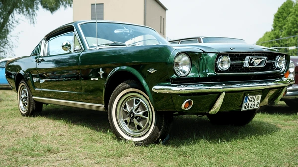

GRAN TURISMOFord Mustang Fastback V8 (1967)
 Una leyenda americana en estado puro. Esta unidad cuenta con un motor V8 de bloque pequeño completamente restaurado bajo las especificaciones originales de fábrica. Muestra una carrocería impecable en color verde oscuro con interiores de cuero negro bien conservados. Equipado con transmisión manual de cuatro velocidades y rines de época que completan su imponente estética clásica. |